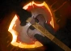
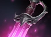
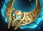

Gameplay Update 7.38
WAYS OF THE WATER
GENERAL UPDATES
- Major Mechanics
- Universal Heroes' damage per attribute decreased from 0.7 to 0.45
- As a result, many heroes had their Base Damage and Attribute changes
- Skill points can now be spent on All Attributes starting at level 2 instead of level 5
- Reflected spells no longer gain Aghanim's Scepter upgrades
- They now benefit from all bonuses the original caster had, including:
- Caster's text upgrades
- Bonuses from talents
- Aghanim's Shard and Aghanim's Scepter effects
- Upgrades that used to depend on the reflecting unit’s items
- They now benefit from all bonuses the original caster had, including:
- Slows now also reduce minimum movement speed by the slow resist percentage
- Minimum movement speed baseline effectively increased from 100 to 120 when under Slow Resistance
- Cooldown on Aghanim’s Scepter upgrades reduced from 120s to 90s
- Glyph of Fortification: Creep duration changed from 4s to 3s
- Units no longer gain bonus movement speed during the night
- Heroes that enter a Hero’s backpack for the first time have a 3s grace period to swap into main inventory with no cooldown (once per Hero)
- Roshan
- Roshan is back in the river, with one pit located near each sidelane
- Top lair is slightly closer to Dire’s jungle entrance, bottom lair is closer to Radiant’s
- Only the active Roshan pit shows as a minimap icon
- Roshan initially spawns in the bottom lair at minute 5, then alternates top/bottom every time he respawns
- Starting at 15:00, Roshan follows the day/night cycle, traveling across the river
- Moves to the Top pit at night, Bottom pit at day
- Ignores attempts to block him (but will throw heroes away if they attack or stand in his path)
- If attacked or obstructed while moving:
- Throws the hero ~1500 distance, dealing 200 pure damage + 1s stun
- Removes 40% of the target’s current HP each throw
- Each throw grants Roshan +10 damage until he reaches his destination
- After 3 throws, he ignores heroes completely
- Roshan no longer has bonus movement speed while traveling between pits
- Roshan now has 25% Slow Resistance + an additional 25% when running between pits
- When Roshan is killed, his travel status is removed until next spawn (timer updates to show he may be traveling again)
- Added a minimap Roshan icon that shows his possible travel area
- “Road of Retribution” (the path Roshan takes):
- Applies a 25-range Disarm to affected units
- Knocks units back 600 units, dealing 200 pure damage
- Has a random chance for additional “Bash” effects and new visuals
- Wandering Waters
- The top and bottom river areas are now flooded by streams of traversable water
- New pathing routes connect near the T3 towers down to the T1 towers (former Twin Gate location)
- Going upstream reduces movement speed by 10% (downstream gives a small speed bonus)
- Units can still attack or cast spells normally while in water
- Water-based abilities have special visuals on this terrain
- Streams have two zones: “strong current” up to +150 MS, “moderate current” up to +100 MS
- Speed bonus depends on facing direction (100% downstream to 0% at 90°)
- Watchers, camps, and pathways adjusted around these new water routes
- Radiant and Dire jungles each have a moderate-current stream starting near the easy camp, joining the main river near the T2 towers
- Tormentor
- Spawns at minute 20 in the corners near each offlane T2 tower
- Has 2000 HP + 10 armor, respawns 5 minutes after being slain
- Killing a Tormentor grants +1 Aghanim’s Shard to a random allied hero without one
- Damage reflection increased from 70% to 80%
- Now also grants 250 gold to each allied hero upon death
- Tormentor spawns first at the Radiant side (night), then at the Dire side (day), alternating with Roshan
- Tormentor’s abilities scale over time or with number of deaths:
- Unyielding Shield: Base 500 + (200 per minute of game)
- Barricading Barrier: Base 300 + (75 per minute of game)
- Reflect damage: 50% + (2% per minute of game)
- The Shining: DPS increased from 30 to 60, radius changed from 1200 to 1000
- Alleviation (new): After dying, leaves a 900-radius aura that grants +2% max HP regen for 15s
- Map Objectives
- Neutral watchers, outposts, and minor objectives rearranged near new watery paths
- Early push towers have slightly reduced armor to encourage early rotations
- Added new mini-watchers near the side shops
- Creep aggro range increased from 500 to 550
- Additional Balances
- Glyph of Fortification cooldown increased from 8 to 10 minutes
- Glyph now grants 20% tower damage reduction for 5 seconds after effect ends
- This can only happen once per Tier 2 tower
- Roshan respawns 20s faster after each kill
- Water Rune mechanic near the river side shops reworked (stacks up to 2 charges)
- Shrines of Wisdom
- Wisdom Runes removed and replaced with new buildings: Shrines of Wisdom
- Located in the offlane side jungles between Tier 1 and 2 towers where Ancient camps used to be
- Each Shrine activates every 7 minutes, glowing and filling with experience
- To gather XP, a hero must stand within 300 units for 3s
- If an enemy enters the Shrine’s radius, the timer is paused until the enemy leaves or is killed
- XP is granted to a random hero within 300 units, plus the teammate with the lowest XP
ITEM UPDATES
Abyssal Blade
- Recipe changed
- Now requires Skull Basher (2875), Sange (2100) and a 175 gold recipe. Total cost unchanged at 6250
- Used to require Skull Basher (2875), Vanguard (1700) and a 1675 gold recipe
- Now provides: +35 Damage, +26 Strength, +25% Slow Resistance, +25% Health and Lifesteal Amp
- No longer provides +250 Health and +10 Health Regen
- Removed Damage Block ability

Battle Fury
- Recipe changed
- Now requires the second Broadsword (1000) instead of Claymore (1350)
- Recipe cost increased from 450 to 600. Total cost decreased from 4100 to 3900
- Bonus Damage decreased from +65 to +50
- Cleave damage to heroes decreased from 70% to 60%
Heaven's Halberd
(ITEM REMOVED)
- Requires Vanguard (1700), Crown (450), Ring of Regen (175) and a 275 gold recipe. Total cost: 2600
- Provides +7.5 Health, +6 Health Regen and +5 All Attributes
- Passive: Damage Block – 60% chance to block 60 damage on melee, 30 on ranged
- Active: Disarm – Now can be dispelled. Mana Cost 75 → 25. Duration on Ranged heroes 5s → 4s
Gleipnir
(ITEM REWORKED)
- Recipe changed
- Now requires Point Booster (1200) instead of Maelstrom (2950)
- Recipe cost increased from 550 to 1100. Total cost decreased from 5750 to 4550
- Now provides +75 AoE Bonus and +200 Mana
- Eternal Chains cast range increased from 300 to 400
- Eternal Chains no longer deals damage
- Eternal Chains radius decreased from 350 to 275 (effective radius unchanged due to item’s AoE Bonus)
- Eternal Chains manacost decreased from 200 to 100
- Removed Chain Lightning ability
Mage Slayer
- Now requires Gloves of Haste (450), Cloak (800) and a 400 gold recipe
- Total cost decreased from 2825 to 2800
- Used to require Oblivion Staff (1625), Cloak (800) and 900 gold recipe
- Now provides +5 Health Regen and +8 Damage
- Attack Damage reduced from +20 to +18
- Magic Resist bonus decreased from +45 to +30

Khanda
(ITEM REWORKED)
- Now requires Tiara of Selemene (1800) instead of Crystals (2000)
- Recipe cost increased from 550 to 700
- Total cost increased from 5100 to 5900
- Now provides +8 Mana Regen instead of +50 Damage
- Removed Critical Strike ability
- Empower Spell now ignores deal attack damage
- Empower Spell bonus damage increased from 50% to 80%
- Empower Spell now applies Break to the target
- Empower Spell cooldown decreased from 50s to 30s
- Empower Spell buff duration increased from 15s to 12s

Revenant's Brooch
- Requires Crystals (2000), Voodoo Mask (700) and a 600 gold recipe. Total cost: 3300
- Provides +25 Damage and +16% Spell Lifesteal
- Passive: Phantom Critical – 30% chance to deal bonus magical damage = 80% of the attack’s damage
- Phantom Crit can’t be applied to the same target more than once per second
- Replaces your Attack Speed with +8 Damage (no effect on buildings)
HERO UPDATES
Ancient Apparition
- Cold Feet: Stun duration rescaled from 1.9/2.2/2.5/2.8 to 1.8/2.2/2.6/3.0
- Chilling Touch: Attack range bonus from 60/120/180/240 to 80/160/200/240
- Ice Blast: Scepter Mana Cost reduction decreased from 50% to 40%
Axe
- Base damage increased by 1
- Damage at level 1 increased from 55-59 to 56-60
- Battle Hunger: Damage per second from 10/15/20/25 to 12/18/24/30
- Counter Helix: Damage rescaled from 95/120/145/170 to 100/120/140/160
- Aghanim's Scepter Attack Damage Reduction decreased from 20% to 15%
Drow Ranger
- Precision Aura: Now works with Marksmanship
- Self Agility percentage bonus reworked from 2% per hero to 4/8/12/16% per level
Earth Spirit
- Rolling Boulder: Bonus movespeed is also granted to Earth Spirit when rolling over an allied hero
- Boulder Smash: No longer deals bonus damage to creeps
- Geomagnetic Grip: Damage increased from 50/125/200/275 to 70/140/210/280
Elder Titan
- Astral Spirit: Bonus Speed (Heroes) decreased from 5/6/7/8% to 4/5/6/7%
Ember Spirit
- Searing Chains: Unit count decreased from 3 to 2
- Flame Guard: Damage per second increased from 15/20/25/30 to 20/30/40/50; Magic Barrier increased from 60/135/210/285 to 60/140/200/300
- Fire Remnant: Cast Point decreased from 0.2s to 0s
Hoodwink
- Base Agility increased from 24 to 25
- Mistwoods Wayfarer: [Add lines if needed]
- Acorn Shot: [Add lines if needed]
- Sharpshooter: [Add lines if needed]
- Talents: [Add lines if needed]